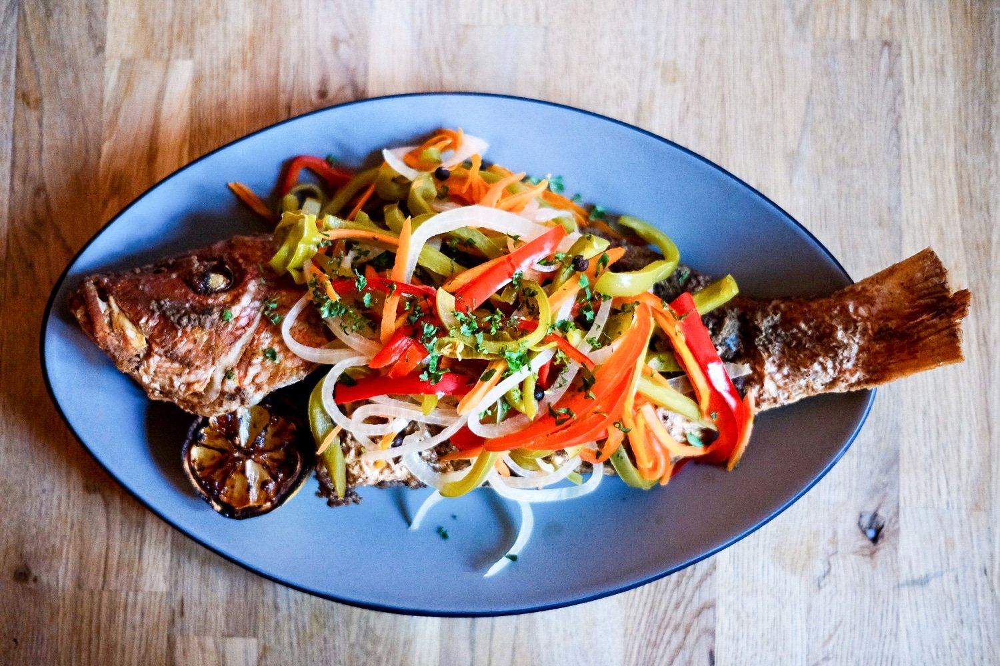

Escovitch Fish

Description
Fried whole fish (or fish steaks from larger fish) served with a sauteed mixture of pickled dressings and peppers. Delicious, low-investment and healthy!
Ingredients
- Fish: This dish requires fresh whole fish or fish steaks. Common fish used for this dish include red snapper, whiting, kingfish, and bluefish. Any firm white fleshed fish will do however.
- Vegetables: An assortment of carrots, onions and a mix of red, green, yellow, and orange bell peppers julienned, sliced or cut into otherwise thin strips
- Garnish: Thyme and green onions (also known as "scallions" in other circles) are added to the mix to further enhance flavor and give color variety.
- Vinegar: White distilled vinegar is necessary to pickle the vegetables and form the sauce to be served with the fish.
- Hot Peppers: Scotch Bonnett peppers are used and form the basis of the spice in this dish. Use caution with these however as they can be quite intense if you are not used to pepper. The intensity of the pepper is tied to its color with green sitting lower on the spectrum and red sitting at the top.
- Salt, Black Pepper & Ground Pimento: Fish should be seasoned with a mixture of these (for best effect, make an incision in the side of fish and apply mixture of these seasonings into said cuts before frying. The longer the better!)..
Steps
Here's a very brief run down of how to prepare this dish:
- TBD
- TBD
- TBD
- TBD
- TBD
- TBD
Return to Recipes List